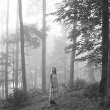

Portada del álbum

Historia
*Folklore* fue lanzado el 24 de julio de 2020 como una sorpresa para sus fans. Taylor trabajó con Aaron Dessner y Jack Antonoff para crear un sonido más íntimo y narrativo. El álbum ganó el Grammy al Álbum del Año en 2021 y es considerado un clásico moderno.
Curiosidades
- Fue lanzado como sorpresa, sin promoción previa.
- “exile” fue la primera colaboración oficial con Bon Iver.
- El álbum fue escrito y grabado durante el confinamiento por la pandemia.
- La estética del álbum está inspirada en bosques y paisajes melancólicos.
Tabla de impacto
| Año | Evento | Impacto |
|---|---|---|
| 2020 | Lanzamiento sorpresa | Millones de reproducciones en 24 horas |
| 2021 | Grammy a Álbum del Año | Reconocimiento mundial |
| 2022 | Folklore: The Long Pond Studio Sessions | Documental íntimo en Disney+ |
Fragmento poético
“Folklore es un álbum que se siente como un diario abierto, lleno de historias que podrían pertenecer a cualquiera.”
Encuesta rápida
Tabla de canciones
| Número | Canción | Duración |
|---|---|---|
| 1 | the 1 | 3:30 |
| 2 | cardigan | 3:59 |
| 3 | the last great american dynasty | 3:51 |
| 4 | exile (feat. Bon Iver) | 4:45 |
| 5 | my tears ricochet | 4:15 |
Listas variadas
Lista ordenada de premios
- Grammy al Álbum del Año (2021)
- American Music Award al Álbum Favorito
- Billboard Top 200 #1
Lista no ordenada de temas del álbum
- Narrativas
- Melancolía
- Intimidad
- Poética
Lista de definición
- Folklore
- Historias y leyendas contadas a través de canciones.
Formulario interactivo
Enlaces útiles
Sitio oficial de Taylor Swift
Canal oficial de YouTube
Twitter
GitHub
Opciones extra
Ctrl + F para buscar tu canción favorita.
Error 2020: aislamiento detectado
Variable x = año de lanzamiento.
cardigan — canción que simboliza la esencia del álbum.
“And when I felt like I was an old cardigan under someone’s bed, you put me on and said I was your favorite.”